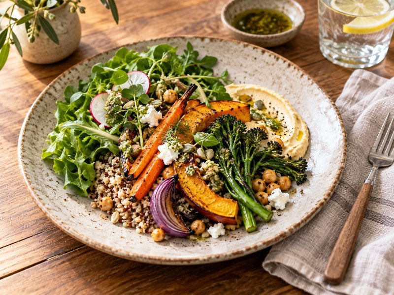
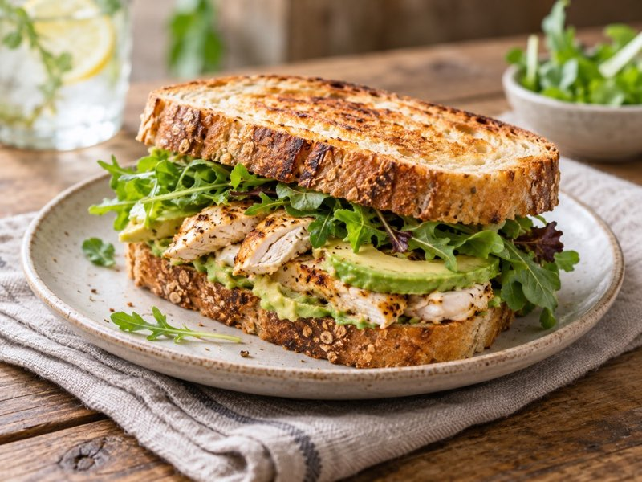
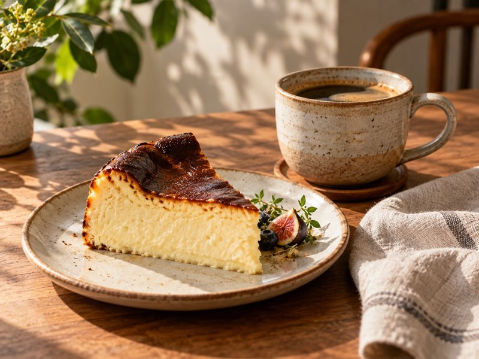
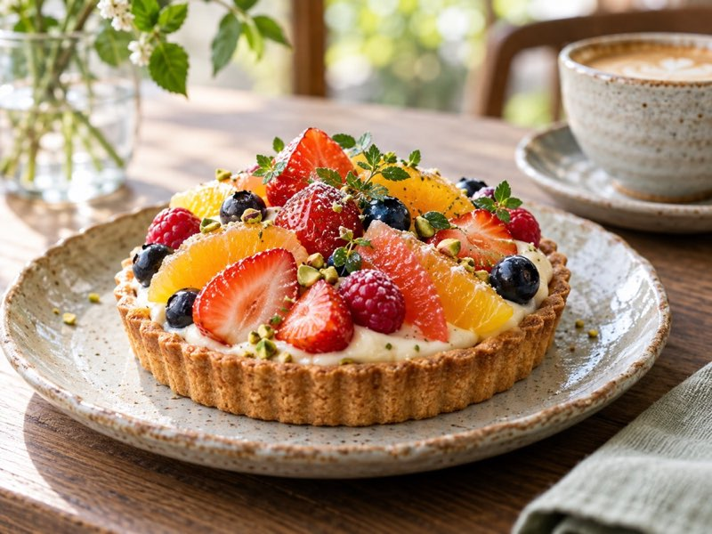
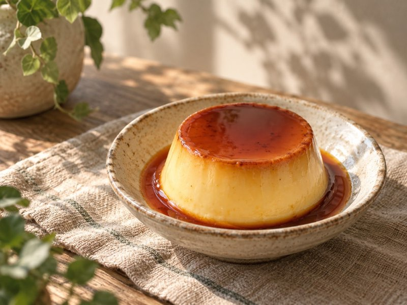

MENU
季節を味わうランチから、ひと息つきたい日のスイーツとドリンクまで。お気に入りのひと品を見つけてください。
表示価格はすべて税込です。
提供時間 11:00〜14:30

1,480円
季節の野菜を中心に、彩りと食べごたえを楽しむランチプレート。
1,280円
スパイスの香りを楽しむ、ひなたの自家製カレー。

1,180円
チキンとアボカドを合わせた、満足感のあるサンドイッチ。

650円
香ばしい焼き色と、なめらかな口どけ。コーヒーにもよく合うひと品です。

720円
季節のフルーツをあしらった、華やかなタルト。
580円
にんじんのやさしい甘みを楽しむ、素朴な焼き菓子。

550円
どこか懐かしい味わいの、手作りプリン。
写真はイメージです。季節や仕入れ状況により、内容が変わる場合があります。
営業時間・店舗情報を確認する